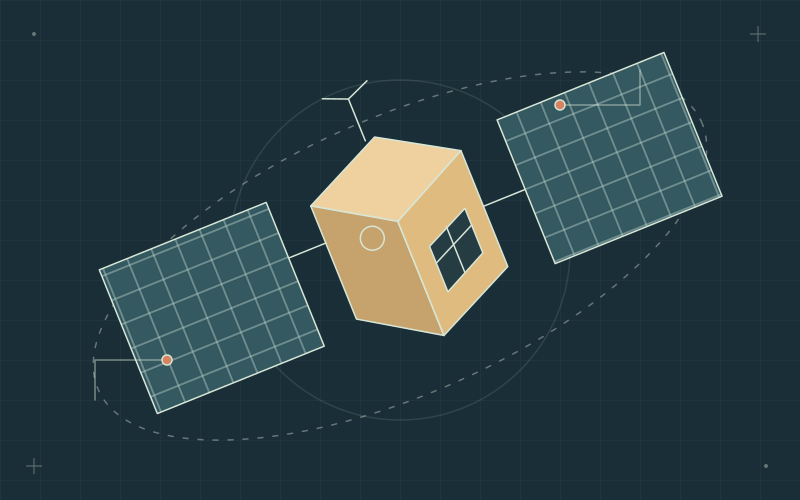
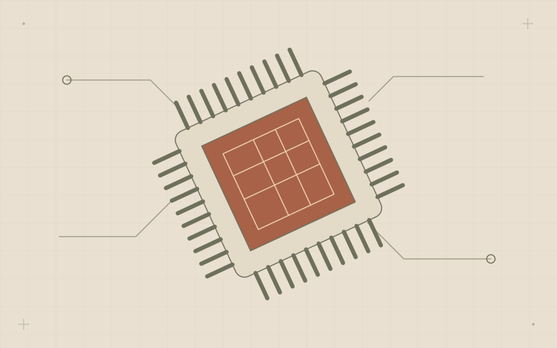
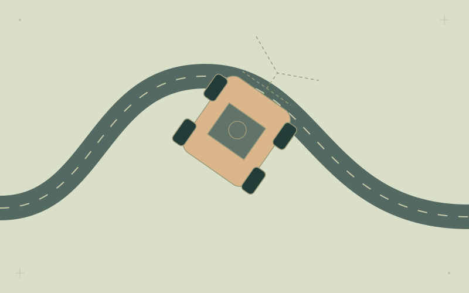
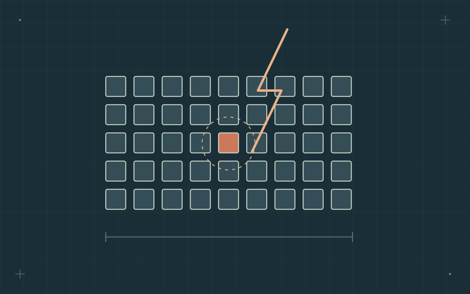
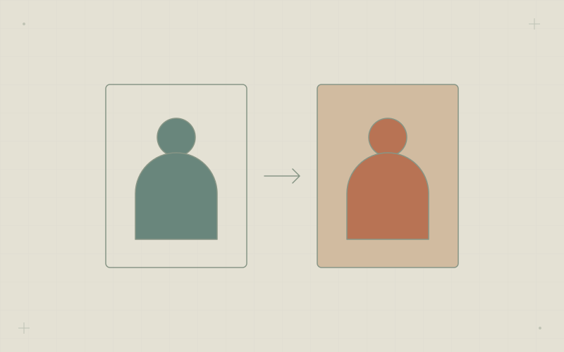
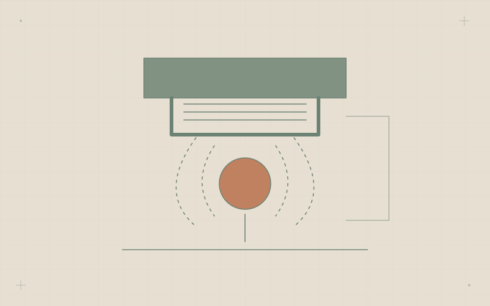
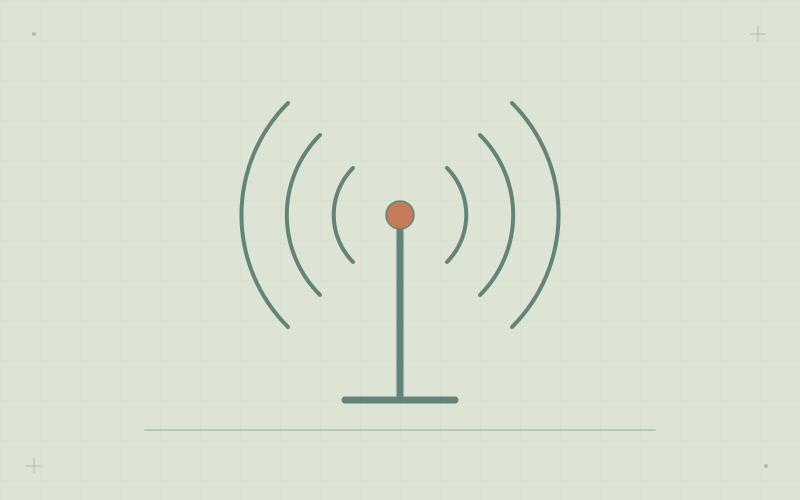

Plateforme pédagogique de logiciel de vol
Une plateforme pédagogique dans le navigateur pour explorer le logiciel de vol de la NASA sans installation locale complexe, pensée pour les universités et équipes étudiantes des pays émergents.
Projets universitaires, travaux indépendants et initiatives auxquelles j’ai contribué. Recherchez un nom, une technologie ou un domaine.
Une plateforme pédagogique dans le navigateur pour explorer le logiciel de vol de la NASA sans installation locale complexe, pensée pour les universités et équipes étudiantes des pays émergents.

Logiciel embarqué temps réel pour un prototype physique de CubeSat qui oriente ses panneaux solaires vers une source lumineuse.

Validation de l’extension 128 bits du processeur CVA6, avec vérification des instructions 32, 64 et 128 bits.

J’ai contribué à créer l’Escola Piloto de Engenharia Aeroespacial à l’UFSM, reliant étudiants, professionnels et écoles publiques par l’apprentissage pratique.

Logiciel temps réel bare-metal pour moteurs CC, servomoteur de direction et caméra linéaire d’un véhicule suiveur de ligne.

Chez Carancho Aerodesign, j’ai dirigé le pôle structure réunissant trois départements : analyse structurale, charges et aéroélasticité, et CAO.
Un noyau bas niveau pour explorer les interactions entre matériel, interruptions et processus.

Injection de fautes Single Event Upset pour évaluer le matériel en milieu radiatif.

Un filtre d’image sur SoC reliant les modèles haut niveau à la conception matérielle.

Spécification, implémentation et validation d’un filtre numérique en VHDL.

Modélisation et simulation de commande temps réel d’une suspension magnétique autour de son équilibre.

Modélisation de chaînes de transmission radio et de filtres pour objets connectés.
Simulation MATLAB d’une chaîne de transmission numérique 2-PAM avec filtres analogiques et numériques.
Projet de génie logiciel à six pour créer un compilateur Java pour un sous-ensemble d’un langage.
Un correcteur orthographique comparant les structures de données pour une recherche rapide et économe en mémoire.
Projet entrepreneurial à six : une application pour partager des expériences et découvrir de nouvelles activités.
Guides interactifs pour explorer la mécanique des solides grâce au code et aux graphiques.

Un kit pédagogique de mini-fusée à bas coût pour proposer des activités aérospatiales aux écoles publiques.
Coordination étudiante de Webservatório, projet de médiation astronomique reliant le public et les experts par des observations et échanges en ligne.
Composants numériques VHDL, d’un banc mémoire à registres à la détection de paquets Ethernet.